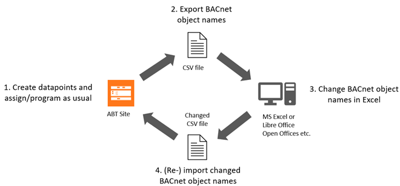
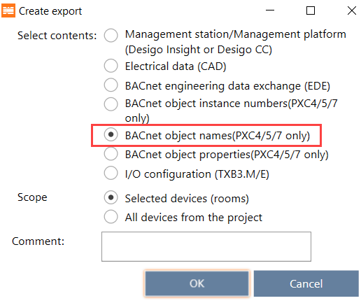
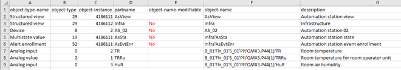

Changing BACnet object names (CSV)
该功能使得同一对象的所有名称得以统一和标准化。如果客户不接受西门子标准名称，则这是必需的，例如：
西门子 | 顾客 | ||
|---|---|---|---|
对象名称 | 描述 | 对象名称 | 描述 |
B1’Plt1’TOa | 室外气温 | 模拟输入3 | OAT |
B1’Plt1’TSu | 送风温度 | 模拟输入4 | SAT |
Workflow


对象名称的重命名会对 Desigo CC 产生影响。某些自动功能将不再受支持，必须手动创建（例如，使用图形生成器分配图形对象）。
Create a data export
- Go to Building > Building structure.
- Select a device or a hierarchy object.
- Right-click and select Create export.
- The Create export dialog box opens.
- Select the Scope of content to export.
- Select the BACnet object names (PXC4/5/7 only) option.

- (Optional) Enter a comment.
- Click OK.
- The selected content is exported to the default directory for exports [drive]:\Users\Public\Documents\Siemens\DESIGO\Exports.
- The Create export dialog box displays allowing you to open the containing folder.
- Click Open folder.
- The file explorer opens.
- Extract the created zip.file.
- For each device is a csv.file created with the corresponding device name.
Modify object names
- Open the csv.file with Excel.
- Rename the object name (column F) and description (column G) as required.
INFO:
- Do not change names in the columns object-name and description, if the column object-name-modifiable contains a No.
- Do not rename column names or delete the header row.
- Save the changes.
- Import the file back to ABT Site.
Importing modules and I/Os
- The changed Object name is imported.
- The Object name rule is changed to
User defined.
创建的其他行将被跳过且不会导入。已删除的行在项目中保持不变。